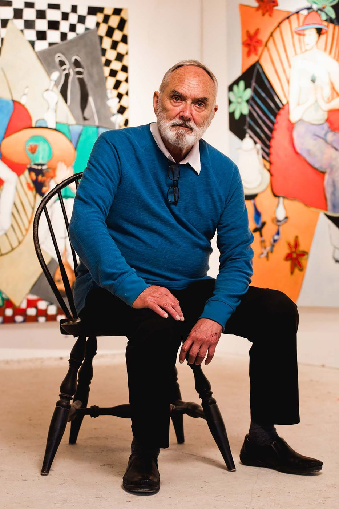
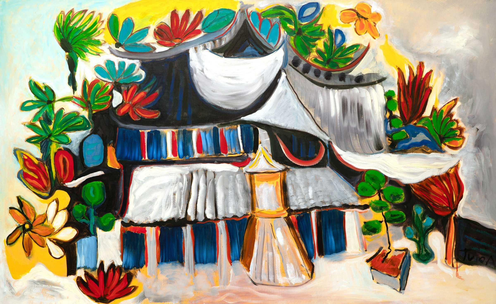
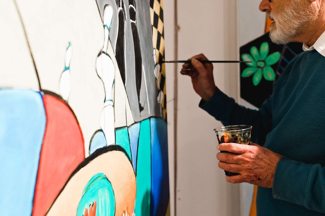
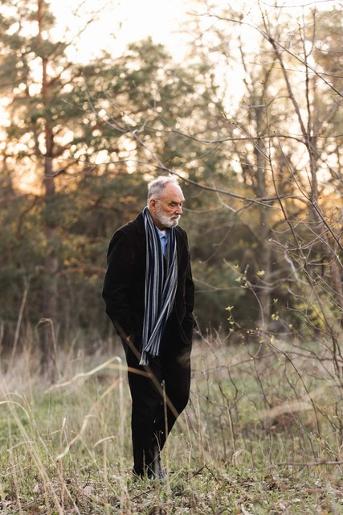

The Artist
Father Jerome Tupa
A native of North Dakota and Benedictine monk of Saint John's Abbey in Collegeville, Minnesota, Father Jerome Tupa has spent more than fifty years painting the world's sacred landscapes — producing some of the most vibrant oil paintings in contemporary religious art. His interest in art began at the University of North Dakota under professor Luella Raab Mundel; his doctoral studies in French literature at the Sorbonne deepened the vocation, and painting became inseparable from his scholarship. His first show was at the Librairie St. Séverin in Paris — a modest debut that opened a fifty-year career of increasingly ambitious work. While directing the French Studies program in Aix-en-Provence, he ran mornings below Mont Sainte-Victoire, Cézanne's mountain.
He returned to Saint John's Abbey in 1982 to be ordained and receive his Master of Divinity, going on to serve thirty-four years as professor of French at Saint John's University. A pivotal 1987 sabbatical in Rome produced thirty-five new paintings — and the breakthrough he describes simply: "I just made a high circle on the canvas. With one gigantic stroke, I moved into abstract painting."
His pilgrimages through Italy, Spain, France, Greece, the Holy Land, Turkey, Syria and Egypt have produced hundreds of oils and watercolors charged with the energy of sacred encounter. His Road to Rome series was exhibited at the Pope John Paul II Cultural Center in Washington, D.C.; his work has been shown at the Getty Center, the Minnesota Museum of Art, the Naples Philharmonic Museum, the National Museum of Catholic Art in New York, and Marshall Field's State Street Gallery in Chicago. In 2025, Join the Pilgrimage opened at the Basilica of Saint Mary in Minneapolis, and his book The Pilgrim Age was completed in March 2026.
"Painting is a place to express various parts of my psyche, parts of my inner self not exposed in daily life," he says. "Painting, like spirituality, is liberating. I paint what I cannot say with words — the presence behind the landscape."



- Community
- Saint John's Abbey, Collegeville
- Vocation
- Monk · Priest · Painter
- Role
- Artist in Residence, St. John's University
- Career
- 50+ years · 41 collections
- On offer October 22
- Eleven original works
“We are all
on a pilgrimage.
That is the human condition.”
Father Jerome Tupa
In the Sale